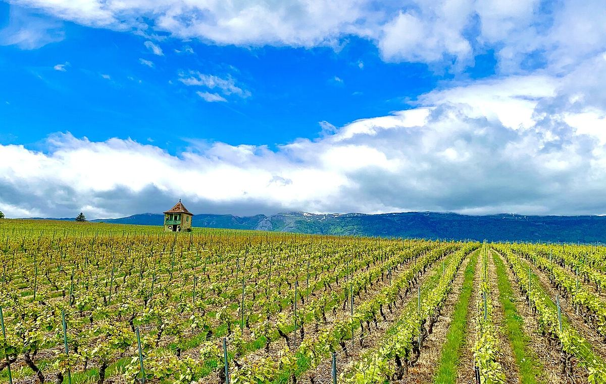

Svizzera
La Svizzera è un piccolo paese vitivinicolo molto vario, fatto di vigneti di montagna e di riva di lago, che beve gran parte di ciò che produce. È la patria dello Chasselas e conserva un notevole patrimonio di vitigni autoctoni, soprattutto nel Vallese.

Storia
La vite era già coltivata nel territorio dell’attuale Svizzera in epoca romana, quando legioni e coloni diffusero il vino lungo le valli del Rodano e del Reno e sulle rive dei laghi. Dopo la caduta dell’Impero furono soprattutto i monasteri a mantenere e ampliare i vigneti. Nel XII secolo i monaci cistercensi cominciarono a dissodare e terrazzare i pendii che dominano il Lago Lemano, nell’attuale Lavaux, e durante il Medioevo e l’età moderna il vino divenne una voce essenziale dell’economia di molti cantoni. Nell’Ottocento oidio, peronospora e fillossera devastarono gran parte dei vigneti, che si ridussero notevolmente e furono reimpiantati su portinnesti americani, concentrandosi sui pendii migliori.
Per buona parte del Novecento il settore fu protetto da una politica agricola che limitava le importazioni di vino bianco, favorendo un consumo quasi esclusivamente interno. La progressiva apertura del mercato dagli anni Novanta costrinse i produttori a migliorare la qualità, ridurre le rese e valorizzare i vitigni locali. Oggi la Svizzera esporta pochissimo vino, e per questo le sue bottiglie migliori restano relativamente sconosciute fuori dal paese.
Clima e suoli
I vigneti svizzeri si trovano in condizioni in linea di principio estreme per la vite, e la loro esistenza dipende da microclimi favorevoli. I grandi laghi, come il Lemano, il lago di Neuchâtel o quelli della Svizzera italiana, mitigano le temperature e riflettono la luce del sole sui pendii. Nel Vallese, l’alta valle del Rodano è protetta dalle montagne ed è uno dei luoghi più secchi e soleggiati del paese, anche se le viti hanno spesso bisogno di irrigazione. Il vento caldo da sud, il föhn, aiuta l’uva a maturare in autunno. I suoli sono molto vari: morene e depositi glaciali, molassa, calcari, scisti, gneiss e alluvioni, spesso su pendenze così forti da richiedere terrazze sostenute da muri in pietra.
Regioni
Si distinguono di solito sei grandi regioni. Il Vallese è il cantone con più vigneti e con la maggiore varietà di vitigni. Il Vaud, con zone come La Côte, Lavaux e il Chablais, è il grande territorio dello Chasselas. Ginevra ha un vigneto ampio e relativamente pianeggiante attorno alla città. La regione dei Tre Laghi (Neuchâtel, Bienne e Morat) si distingue per i Pinot Noir e per i rosati Œil-de-Perdrix. La Svizzera tedesca, dai Grigioni a Zurigo e Sciaffusa, punta sul Pinot Noir (Blauburgunder) e sul Müller-Thurgau, mentre il Ticino, di lingua italiana, ha fatto del Merlot il suo vitigno principale.
Vitigni e stili
Il vitigno bianco più caratteristico è lo Chasselas, chiamato Fendant nel Vallese, che dà bianchi leggeri, di acidità moderata e molto capaci di esprimere il terroir. Il rosso più coltivato è il Pinot Noir, seguito da Gamay, Merlot e Gamaret, un incrocio creato in Svizzera. Il Vallese conserva vitigni antichi come la Petite Arvine, l’Amigne, l’Humagne Blanche, l’Humagne Rouge o il Cornalin, e chiama Johannisberg il Silvaner. Gli stili vanno dai bianchi secchi e freschi ai rossi eleganti di Pinot Noir, fino ai vini dolci da uve appassite sulla pianta.
Normativa
L’organizzazione delle denominazioni dipende in gran parte dai cantoni, che definiscono le proprie Appellations d’origine contrôlée (AOC) e, in alcuni casi, menzioni come Grand Cru o Premier Grand Cru, con criteri che variano da un cantone all’altro. Nel Vaud, per esempio, Dézaley e Calamin, nel Lavaux, sono denominazioni Grand Cru. Questa diversità normativa riflette la struttura federale del paese e la forte identità di ciascuna regione vitivinicola.
Regioni e denominazioni
Vallese
AOC Valais · Il Vallese, nell’alta valle del Rodano, è il maggiore cantone vitivinicolo della Svizzera e quello con la più grande varietà di vitigni. I suoi pendii terrazzati, secchi e soleggiati, danno Fendant, Petite Arvine, Pinot Noir e una lunga serie di uve autoctone.
Vaud
AOC Vaud · Il cantone di Vaud, sulle rive del Lago Lemano, è il grande territorio dello Chasselas. Le terrazze del Lavaux, Patrimonio dell’Umanità, e zone come La Côte e il Chablais danno bianchi delicati che esprimono con nitidezza il loro luogo d’origine.